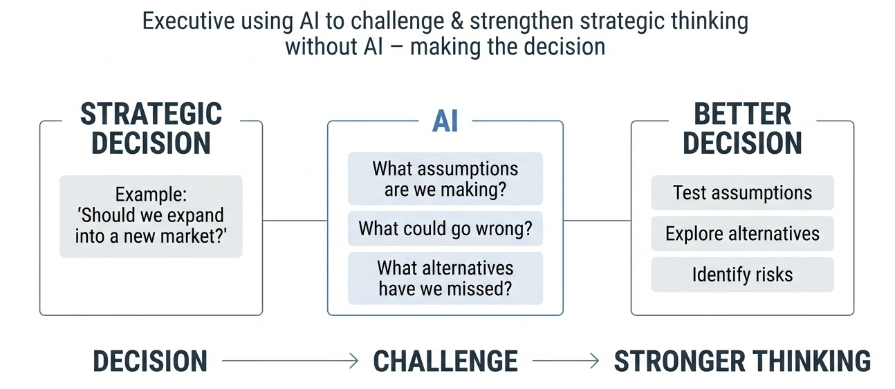
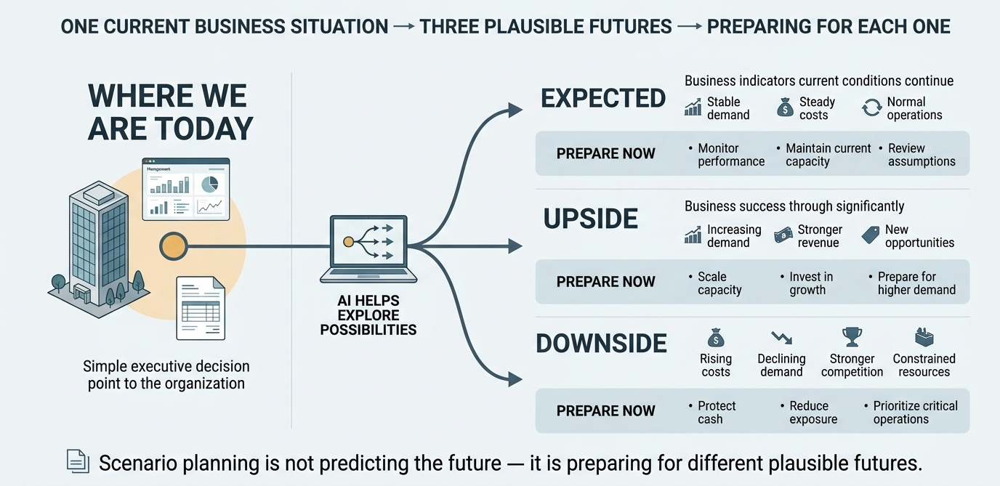
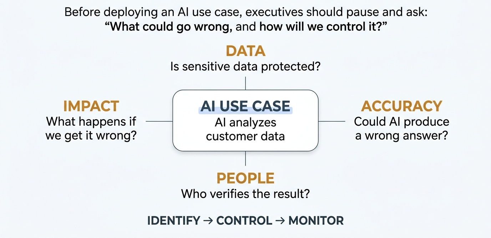
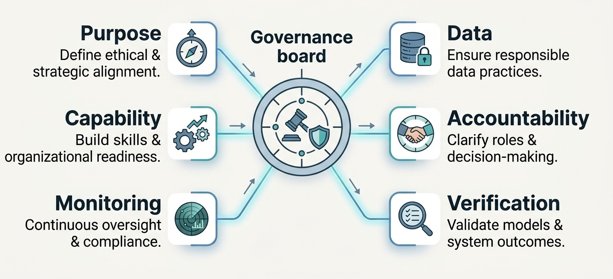
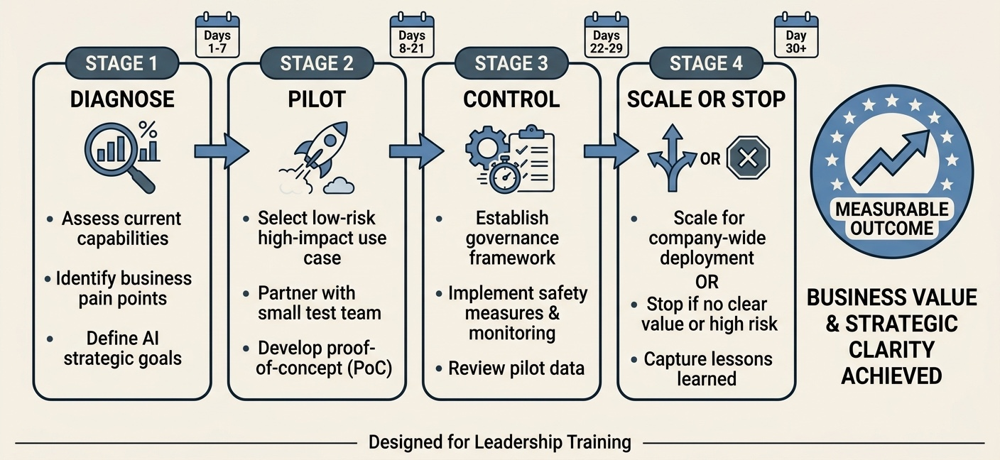

AI as a Strategic Sparring Partner
The leadership shift is from asking AI to do tasks to asking AI to challenge decisions. A strong strategic prompt makes assumptions visible, tests alternatives and exposes questions a leadership team may be missing.
- Frame the decision, not just the task.
- Ask AI to challenge assumptions and identify blind spots.
- Generate alternatives before choosing a direction.
- Separate evidence, assumptions, risks and judgment.

Open by connecting this session to Sessions 1–3: attendees have learned to use AI for productivity, documents and data. The capstone question is: “What changes when AI becomes part of how a leadership team thinks?” Emphasize that strategic sparring is not prediction and not automated decision-making.
Run a Strategic Challenge Session with AI
Give AI a real strategic decision, then deliberately ask it to argue from multiple perspectives before you form a conclusion.
Act as a strategic sparring partner for a senior leadership team. We are considering whether a fictional organization should launch a digital customer-service platform within the next 12 months. Challenge this decision from five perspectives: 1. Strategic value 2. Financial implications 3. Customer impact 4. Operational capability 5. Major risks Then provide: - 3 assumptions we may be making - 3 arguments FOR the initiative - 3 arguments AGAINST it - 3 questions we must answer before deciding - 2 alternative strategies we should consider Clearly separate facts, assumptions, hypotheses and strategic judgment. Do not invent organizational data.
Output participants should capture
Decision → assumptions → arguments → alternatives → unanswered questions.Scenario Planning with AI
Strategy becomes stronger when leaders prepare for several plausible futures instead of building one plan around one forecast.
- Identify forces that could materially change the environment.
- Separate predictable trends from genuine uncertainty.
- Build a small number of plausible scenarios.
- Identify signals that would indicate which scenario is emerging.
- Prepare actions that work across multiple futures.

Build a Three-Scenario Strategy Map
Act as my strategic planning partner. I am a senior manager at a university preparing for the next 12–24 months. ORGANIZATION: A mid-sized university that provides undergraduate and graduate education, professional training, and online learning programs. CURRENT SITUATION: Student demand for online and digitally supported learning is increasing, but the university is facing budget constraints, rising operating costs, and limited technology resources. Management needs to decide how much to invest in digital learning while protecting financial sustainability and maintaining educational quality. Create three simple scenarios: 1. EXPECTED — Current trends continue. 2. UPSIDE — Demand for digital learning grows significantly and additional resources become available. 3. DOWNSIDE — Budget pressures increase while technology and operating costs continue to rise. For each scenario, provide: - A short description of what could happen - The likely impact on the university - 2 early warning signs management should monitor - 2 actions the university could take now to prepare - 1 key strategic question management should discuss Present the results in a simple table that an executive team could review in a management meeting. Then identify: 1. THREE "NO-REGRET" ACTIONS — actions that would be useful across all three scenarios. 2. TWO KEY INDICATORS — measures management should monitor regularly to determine which scenario may be emerging. 3. ONE DECISION POINT — explain what future development would cause management to reconsider its current strategy. IMPORTANT: - Do not predict which scenario will happen. - Do not assume that the upside or downside scenario will occur. - Clearly distinguish facts given in the situation from assumptions about possible futures. - Keep the recommendations practical and within the control of university management. - Use concise executive language. - The purpose is to help management prepare for several plausible futures, not to predict the future.
Output
Three plausible futures + early-warning signals + no-regret actions.AI Risk Assessment: Beyond the Technology
AI risk is not only about model accuracy. Leaders must consider what can go wrong across data, people, processes, technology, compliance and reputation.
- Data: sensitive, inaccurate or unauthorized information.
- Model: hallucination, bias, weak reasoning or unreliable output.
- Process: AI output enters a workflow without adequate review.
- People: over-reliance, unclear accountability or poor skills.
- Organization: regulatory, financial, operational or reputational exposure.

Turn an AI Use Case into a Risk Register
Create a practical AI risk register for this fictional use case: Use case: Managers use a generative AI assistant to draft internal reports and summarize operational documents. Identify 6 material risks. For each risk provide: - Risk statement - Likelihood: Low / Medium / High - Impact: Low / Medium / High - Why it could happen - Preventive control - Human review requirement - Owner role Prioritize the risks by management attention. Do not invent laws or regulations. Clearly distinguish the risk itself from the proposed control.
Simple risk logic
Risk → Likelihood → Impact → Control → Human review → Owner
This turns a vague concern into something management can govern.
Emphasize that risk registers are living management tools. The owner is critical: a risk without an accountable owner is difficult to manage. Avoid presenting AI-generated risk ratings as objective truth; leadership must calibrate them.
AI Governance: From Rules to Responsible Practice
Governance answers a leadership question: How will our organization use AI safely, consistently and accountably?
- Purpose: What AI uses are encouraged, restricted or prohibited?
- Data: What information may be entered into which tools?
- Accountability: Who owns the use case and final decision?
- Verification: When is human review mandatory?
- Monitoring: How will we detect failures, incidents and drift?
- Capability: How will employees learn responsible AI practices?

Draft a One-Page AI Governance Framework
Draft a one-page practical AI governance framework for a mid-sized organization beginning to use generative AI. Structure it under these headings: 1. Approved uses 2. Restricted uses 3. Prohibited uses 4. Data and confidentiality rules 5. Human verification requirements 6. Accountability and approval roles 7. Incident reporting 8. Employee training 9. Quarterly review and monitoring Keep the framework practical and easy for managers to implement. Do not cite or invent specific laws. Clearly label any item that should be customized to the organization’s legal or regulatory environment.
Capstone governance test
Every AI use case should have a purpose, permitted data boundary, accountable owner, verification level and escalation path.Invite participants to identify one rule that is too vague to enforce. This is where governance becomes practical: “Use AI responsibly” is not an operational control; a clear data boundary or mandatory review step is.
Your 30-Day AI Leadership Action Plan
The masterclass becomes valuable when participants leave with one focused change they will actually implement.
- Days 1–7 — Diagnose: choose one high-value AI opportunity and define the problem.
- Days 8–14 — Pilot: test one workflow with synthetic or appropriately governed data.
- Days 15–21 — Control: define verification, risk controls and success measures.
- Days 22–30 — Scale or stop: review evidence, document lessons and decide the next step.

Turn the Masterclass into an Organizational Experiment
Act as an AI leadership coach. Help me create a 30-day AI leadership action plan for my organization. My chosen AI opportunity is: [describe the opportunity] The business problem is: [describe the problem] The people affected are: [describe the users] The main risk I am concerned about is: [describe the risk] Create a practical plan with: - One measurable 30-day objective - A Week 1 diagnostic - A Week 2 pilot - A Week 3 risk and governance check - A Week 4 review and scale/stop decision - One success metric - One risk metric - One accountable owner role - Three questions I should ask leadership before proceeding Challenge my assumptions rather than simply agreeing with me. Clearly distinguish facts, assumptions and recommendations.
Final reflection
What will you do differently on Monday?
1. One AI opportunity I will pursue: __________
2. One risk/control I will address: __________
3. One leadership conversation I will start: __________